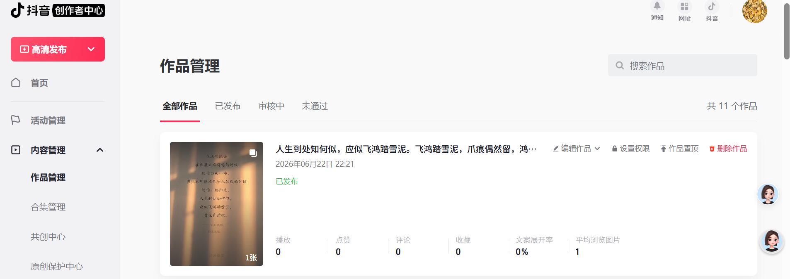

工具不是门槛，探索才是。一个完全不懂编程的人，用AI工具一步步实现"每天自动发抖音"的真实记录。
我有好几个抖音号，每天要发图文内容。
问题是——太累了。
选图、配文案、打开抖音、上传、设置、发布……一套下来少说十分钟。如果每天要发多个号，那就是一场噩梦。
于是我想：有没有办法让AI帮我把这事儿干了？
我对编程一窍不通。Python是什么？API又是什么？这些词对我来说跟天书一样。但我有一个信念——既然AI能写文章、能画画，那它应该也能帮我实现这个想法吧？
我把问题抛给了AI：
"我每天需要自动上传图片到抖音草稿箱，能实现吗？国内网络能不能用？需要什么配置？"
AI给了我一个很完整的分析，列出了四种方案：
| 方案 | 难度 | 能否存草稿 | 推荐度 |
|---|---|---|---|
| 抖音开放平台官方API | 需要企业认证 | ❌ | ⭐⭐⭐ |
| 浏览器自动化（Playwright） | 中等 | ✅ | ⭐⭐⭐⭐⭐ |
| Appium手机自动化 | 非常复杂 | ✅ | ⭐⭐ |
| RPA工具 | 需要购买软件 | ✅ | ⭐ |
AI推荐的是浏览器自动化方案——让程序控制浏览器，像人一样操作抖音创作者平台。
AI说："你Chrome已经登录抖音了？那太好了，我们直接用！"
然后我看到了神奇的一幕——AI在控制我的浏览器。
它打开了一个新的浏览器标签页，自动导航到抖音创作者平台，开始分析页面上的每一个按钮、每一个输入框。
但很快就遇到了第一个坎：
❌ 上传文件失败：Not allowed
原来是Chrome的一个扩展需要开启"允许访问文件网址"的权限。AI让我去 chrome://extensions 开个开关。
这一刻我意识到：AI不是万能的神，它需要我配合。而我们配合起来，就是最强的组合。
开启权限后重试，文件上传成功了！但保存草稿后又出现了新的问题——
"草稿箱在哪？我找不到保存的草稿。"
抖音的草稿机制和我想的不太一样——它不是给个文件夹让你看到，而是"你还有上次未发布的图文，是否继续编辑？"这样提示。
看似出了问题，但每一步失败都在教我：原来抖音是这么工作的。
"那就别存草稿了，直接发！"
AI再次控制浏览器，上传图片、填入文案、点击发布——
✅ 发布成功！
页面跳转到作品管理，出现了"发布成功"四个字。
那一刻我真的挺激动的。一个完全不懂编程的人，通过和AI配合，真的实现了自动发布抖音。
让我用最通俗的语言告诉你：
这是一个在终端里工作的AI编程助手。它不像ChatGPT那样只聊天，它是能真正操作你电脑的AI。
它帮我做的事：
分析问题、设计方案
写自动化代码（虽然我看不懂，但AI自己搞定）
控制我的Chrome浏览器
每一步遇到问题时，帮我分析和解决
AI通过Codex扩展连接到我的Chrome，可以：
打开/关闭标签页
点击按钮、填写表单
上传文件
读取页面内容
截取屏幕截图
我用的是自己做好的金句卡片图片，配上人民日报金句文案。
所有操作都在我这台电脑上完成，不需要服务器，不需要买任何额外服务。
传统上，要实现这个功能，我需要：
学习Python编程（半年）
学习浏览器自动化框架（一个月）
研究抖音API文档（不确定有没有）
反复调试、试错（无限期）
而现在，我和AI配合，一个晚上就实现了。
我不是在"学编程"，我是在**"学怎么用AI帮我解决问题"**。
遇到问题时，我不需要自己翻文档、查资料。我只需要告诉AI："出错了，你看怎么办？"AI就会分析错误、给出解决方案、甚至直接修改代码重试。
这改变了游戏规则。
一台电脑（Windows/Mac都可以）
一个AI编程工具（推荐Codex CLI，或者Cursor、GitHub Copilot）
愿意尝试的心态
不要想着一口气做出一个完美的自动化系统。从最小的目标开始：
先让AI帮你写一个"打开浏览器"的脚本
然后让AI帮你"填写一个表单"
再然后是"上传一个文件"
每一步的成就感，都会推着你往前走。
你只需要说人话：
"帮我上传这张图片到抖音"
"保存到草稿箱"
"发布这篇图文"
AI会把它翻译成电脑能理解的指令。
我写下这篇文章，不是为了炫耀技术（我根本不懂技术），而是想告诉你：
技术的门槛从来没有这么低过。
以前，做一个自动化工具需要十年寒窗。现在，只需要一个想法和愿意尝试的勇气。
我不是程序员，不是工程师，只是一个想偷懒的普通人。但有了AI，平凡人也能做出不平凡的事。
如果你也有一个想要实现的"小想法"，不妨去试试。AI就在那里，等你开口。
"天赋可以让一个人闪闪发光，但努力可以让你持续发光。"
—— 路虽远，行则将至。事虽难，做则可成。
这是我的第一次AI探索记录。还有很多不足，很多可以优化的地方。但第一步已经迈出去了，接下来会越来越好。
如果你也在探索用AI解决实际问题的路上，欢迎留言交流。你的每一个小试牛刀，都是未来改变世界的力量。
探索日期：2026年6月22日
使用工具：Codex CLI + Google Chrome + Codex Chrome扩展
实现功能：自动上传图片到抖音并发布
探索者：沙溪摘录
成品截图
